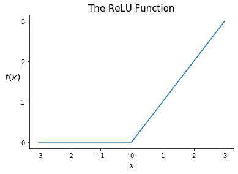

Concept¶
The neural network is a highly powerful and versatile class of models that has become quite a hot topic in machine learning. While the neural network’s ability to often outperform other popular model classes has earned it a reputation for being a near-magical black box algorithm, networks are not terribly complex or mysterious. Rather, by optimizing a highly-parametric and nonlinear structure, neural networks are flexible enough to model subtle relationships that other models may struggle to detect.
Note
Neural networks come in a variety of forms intended to accomplish a variety of tasks. Recurrent neural networks, for instance, are designed to model time series data, and convolutional neural networks are designed to model image data. In this chapter, we only cover feed-forward neural networks (FFNNs). FFNNs can be used for regression or classification tasks and serve as a natural introduction to other forms of neural networks.
This section is organized as follows.
Model Structure
An Overview
Communication between Layers
Activation Functions
Optimization
Back Propagation
Calculating Gradients
Combining Results with the Chain Rule
Combining Observations
A New Representation
Gradients
1. Model Structure¶
Throughout this chapter, suppose we have training data \(\{\bx_n, \by_n\}_{n = 1}^N\) with \(\bx_n \in \R^{D_x}\)—which does not include an intercept term—and \(\by_n \in \R^{D_y}\) for \(n = 1, 2, \dots, N\). In other words, for each observation we have \(D_x\) predictors and \(D_y\) target variables. In this chapter, these will primarily be referred to as the input and output variables, respectively. Note that unlike in previous chapters, we might now have a vector of target variables rather than a single value. If there is only one target variable per observation (i.e. \(D_y = 1\)), we will write it as \(y_n\) rather than \(\by_n\).
1.1 An Overview¶
The diagram below is a helpful representation of a basic neural network. Neural networks operate in layers. The network starts of with an input layer, consisting of the vector of predictors for a single observation. This is shown by \(x_0, \dots, x_3\) in the diagram (indicating that \(D_x = 4\) here). The network then passes through one or more hidden layers. The first hidden layer is a function of the input layer and each following hidden layer is a function of the last. (We will discuss these functions in more detail later). The network below has two hidden layers. Finally, the network passes from the last hidden layer into an output layer, representing the target variable or variables. In the network below, the target variable is two-dimensional (i.e. \(D_y = 2\)), so the layer is represented by the values \(y_0\) and \(y_1\).
Note
Diagrams like the one below are commonly used to represent neural networks. Note that these diagrams show only a single observation at a time. For instance, \(x_0, \dots x_3\) represent four predictors within one observation, rather than four different observations.

Each layer in a neural network consists of neurons, represented by the circles in the diagram above. Neurons are simply scalar values. In the input layer, each neuron represents a single predictor. In the above diagram, the input layer has four neurons, labeled \(x_0\) through \(x_3\), each representing a single predictor. The neurons in the input layer then determine the neurons in the first hidden layer, labeled \(\super{z}{1}_0\) through \(\super{z}{1}_2\). We will discuss how shortly, but for now simply note the lines running from the input layer’s neurons to the first hidden layer’s neurons in the diagram above. Once the neurons in the first hidden layer are set, they become predictors for the next layer, acting just as the input layer did. When the neurons in the final hidden layer are fixed, they act as predictors for the output layer.
One natural question is how many layers our neural network should contain. There is no single answer to this question, as the number of layers is chosen by the modeler. Any true neural network will have an input layer, an output layer, and at least one hidden layer. The network above has two hidden layers. Note that the superscript indicates the hidden layer number, e.g. \(z_{0}^{(1)}\) through \(z_2^{(1)}\) are in the first hidden layer and \(z_{0}^{(2)}\) through \(z_2^{(2)}\) are in the second hidden layer. We could also consider the input layer as an exogenous “hidden layer” and represent it with \(z_{0}^{(0)}\) through \(z_3^{(0)}\).
Another natural question is how many neurons each layer should contain. This is in part chosen by the modeler and in part predetermined. If our predictor vectors are of length \(D\), the input layer must have \(D\) neurons. Similarly, the output layer must have as many neurons as there are target variables. If, for instance, our model attempts to predict a store’s revenue and its costs (two targets) in a given month, our output layer must have two neurons. The sizes of the hidden layers, however, are chosen by the modeler. Too few neurons may cause underfitting by preventing the network from picking up on important patterns in the data while too many neurons may cause overfitting, allowing the network to fit parameters that match the training data exactly.
1.2 Communication between Layers¶
Let’s now turn to the process through which one layer communicates with the next. In this section, let \(\bz^{(a)}\) and \(\super{\bz}{b}\) represent the vector of neurons in any two consecutive layers. For instance, \(\super{\bz}{a}\) might be an input layer and \(\super{\bz}{b}\) the first hidden layer or \(\super{\bz}{a}\) might be a hidden layer and \(\super{\bz}{b}\) the following hidden layer. Suppose \(\super{\bz}{a} \in \R^{D_a}\) and \(\super{\bz}{b} \in \R^{D_b}\).
In a feed-forward neural network, each neuron in \(\super{\bz}{b}\) is a function of every neuron in \(\super{\bz}{a}\). This function occurs in two stages: first a linear mapping of \(\super{\bz}{a}\) onto one dimension, then a nonlinear function called an activation function. Let’s look at a single neuron within \(\super{\bz}{b}\), \(\super{z}{b}_i\). The transformation from \(\super{\bz}{a}\) to \(\super{z}{b}_i\) takes the form
where \(\bw_i \in \R^{D_a}\) is a vector of weights, \(c_i\) is a constant intercept term, and \(f()\) is an activation function. Note that \(\bw_i\) and \(c_i\) are specific to the \(i^\text{th}\) neuron in \(\super{\bz}{b}\) while \(f()\) is typically common among all neurons in \(\super{\bz}{b}\). We can also write the function relating the two layers in matrix form, as below.
where \(\mathbf{W} \in \R^{D_b \times D_a}\), \(\mathbf{c} \in \R^{D_b}\) and \(f()\) is applied element-wise.
Note
Note that we haven’t yet discussed how \(\mathbf{W}\), \(\mathbf{c}\) or \(f()\) are determined. For now, consider these all to be fixed and focus on the structure of a network. How we determine these values is discussed in the optimization section below.
Once \(\super{\bz}{b}\) is fixed, we use the same process to create the next layer, \(\super{\bz}{c}\). When discussing many layers at a time, it is helpful to add superscripts to \(\mathbf{W}, \mathbf{c}\), and \(f()\) to indicate the layer. We can write the transmission of \(\super{\bz}{a}\) to \(\super{\bz}{b}\) followed by \(\super{\bz}{b}\) to \(\super{\bz}{c}\) as
A more mathematical representation of a neural network is given below. The network starts with a vector of predictors \(\bx\). This vector is then multiplied by \(\super{\mathbf{W}}{1}\) and added to \(\super{\mathbf{c}}{1}\), which sums to \(\super{\mathbf{h}}{1}\). We then apply an activation \(\super{f}{1}\) to \(\super{\mathbf{h}}{1}\), which results in our single hidden layer, \(\super{\mathbf{z}}{1}\). The same process is then applied to \(\super{\bz}{1}\), which results in our output vector, \(\by\).

1.3 Activation Functions¶
As we have seen, we create a neuron in one layer by taking a linear mapping of the neurons in the previous layer and then applying some activation function. What exactly is this activation function? An activation function is a (typically) nonlinear function that allows the network to learn complex relationships between the predictor(s) and the target variable(s).
Suppose, for instance, the relationship between a target variable \(y_n\) and a predictor \(x_n\) is given by
where \(\epsilon_n\) is a noise term. Despite its simplicity, this relationship cannot be accurately fit by a linear model.

Ideally, we would apply some function to the predictor and use a different model depending on the result of this function. In the case above, \(x_n > 0\) would “activate” the model \(y_n \approx x_n\), and \(x_n \leq 0\) would “activate” the model \(y_n \approx -x_n\). Hence the name “activation function”.
There are many commonly used activation functions, and deciding which function to use is a major consideration in modeling a neural network. Here we will limit our discussion to two of the most common functions: the ReLU (Rectified Linear Unit) and sigmoid functions. The linear activation function (which is really the absence of an activation function) is also discussed.
ReLU¶

ReLU is a simple yet extremely common activation function. It is defined as
How can such a simple function benefit a neural network? ReLU acts like a switch, selectively turning channels on and off. Consider fitting a neural network to the dataset above generated with \(y_n = |x_n| + \epsilon_n\). Let’s use a very simple network represented by the diagram below. This network has one predictor, a single hidden layer with two neurons, and one output variable.

Now let’s say we decide to use \(f(\bx) = \text{ReLU}(\bx)\) and we land on the following parameters:
This is equivalent to the following complete model
Will this model be able to fit our dataset? Suppose \(x_n = c\) for some positive constant \(c\). We will then get
So we will predict \(y_n = |x_n| = c\), a sensible result! Similarly, if \(x_n = -c\), we would again obtain the valid prediction \(y_n = |x_n| = c\). ReLU is able to achieve this result by activating a different channel depending on the value of \(x_n\): if \(x_n\) is greater than 0, it activates \(y_n = x_n\), and if \(x_n\) is less than 0, it activates \(y_n = -x_n\).
As we will see in the next section, fitting a neural network consists of taking gradients of our activation functions. Fortunately ReLU has a straightforward derivative:
Note that this derivative is not technically defined at 0. In practice, it is very unlikely that we will be applying an activation function to 0 exactly, though in that case the convention is to set its derivative equal to 0.
Sigmoid¶
A second common activation function is the logistic sigmoid function, often referred to as just the sigmoid function. This function was introduced in chapter 3 in the context of the logistic regression. The sigmoid function is defined as
Note that the sigmoid function takes any real value and returns a value between 0 and 1. As a result, the sigmoid function is commonly applied to the last hidden layer in a network in order to return a probability estimate in the output layer. This makes it common in classification problems.
As we saw in chapter 3, a convenient fact about the sigmoid function is that we can express its derivative in terms of itself.
The Linear Activation Function¶
Another possible activation function is the “linear” activation function, which is the same as skipping the activation function altogether. The linear activation function simply returns its input. It is defined with
and has derivative
The linear activation function is often used before the last layer in a neural network for regression. Rather than constraining the fitted values to be in some range or setting half of them equal to 0, we want to leave them as they are.
2. Optimization¶
We have now seen that a neural network operates through a series of linear mappings and activation functions. The linear mapping for layer \(\ell\) is determined by the parameters in \(\super{\mathbf{W}}{\ell}\) and \(\super{\mathbf{c}}{\ell}\), also called the weights. This section discusses the process through which the weights in a neural network are fit, called back propagation.
The rest of this page requires a good amount of matrix differentiation, which is introduced in the math appendix. Note that we use the “numerator layout,” meaning for \(\by \in \R^m\) and \(\bx \in \R^n\), we write \(\partial\by/\partial\bx\) as
2.1 Back Propagation¶
Suppose we choose some loss function \(\mathcal{L}\) for our network to minimize. Note that because our target variable is multi-dimensional, \(\boldsymbol{\mathcal{L}}\) function will be a vector of losses (e.g. the loss for the first target, the loss for the second target, etc.). To find the network’s optimal weights, we can conduct gradient descent, repeatedly taking the derivative of our loss function with respect to each weight and adjusting accordingly. As we will see, this involves finding the gradient of the network’s final weights, then using the chain rule to find the gradient of the weights that came earlier. In this process, we move backward through the network, and hence the name “back propagation.”

Consider conducting gradient descent for the network above. Write the loss function as \(\mathcal{L}(\hat{\by})\), where \(\hat{\by}\) is the network’s output. Let’s start by writing out the derivative of \(\mathcal{L}\) with respect to \(\super{\mathbf{W}}{L}\), the final matrix of weights in our network. We can do this with the chain rule, as below.
The gradient of \(\super{\mathbf{c}}{L}\) is equivalent. The math behind these calculations is covered in the following section. Next, we want to find the gradient of \(\super{\mathbf{W}}{L-1}\), shown below.
This expression is pretty ugly, but there is a shortcut. This gradient and the gradient of \(\super{\mathbf{W}}{L}\) share the first two terms, which represent the gradient of \(\super{\mathbf{h}}{L}\). To save time (both in writing out the gradients and in calculating them in practice), we can record this gradient, \(\nabla \super{\mathbf{h}}{L}\), and apply it where necessary. We can do the same with \(\nabla \mathbf{h}^{(L-1)}\), which simplifies the gradient of \(\mathbf{W}^{(L-2)}\):
We continue this same process until we reach the first set of weights.
We’ve now seen intuitively how to find the gradients for our network’s many weights. To conduct back propagation, we simply use these gradients to run gradient descent. Next, let’s see how to actually calculate these gradients.
2.2 Calculating Gradients¶
In this section we will derive the gradients used in back propagation. For each iteration in this process we need to know the derivative of our loss function with respect to each weight in the entire network. For the network shown above, this requires calculating the following gradients:
Since we will find these with the chain rule, we will need to calculate other gradients along the way. All the necessary gradients are derived below. Note that the following sub-sections cover the stages within a single layer of a network in reverse order (as back propagation does).
Note
Note that the rest of this section considers only one observation at a time. The vector \(\by\), for instance, refers to the output variables for a single observation, rather than a vector of 1-dimensional output variables for several observations. Similarly, \(\partial \mathcal{L}(\hat{\by})/\partial\hat{\by}\) refers to the derivative of the loss with respect to a single observation’s output. The final section discusses how to combine the derivatives from multiple observations.
For the following, let there be \(L\) layers in total. Also let layer \(\ell\) have size \(D_\ell\), except the input and output layers which have sizes \(D_x\) and \(D_y\), respectively.
2.2.1 Loss Functions and their Gradients¶

Back propagation begins where the network ends: the loss function \(\mathcal{L}(\hat{\by})\). Let’s start by introducing some common loss functions and their derivatives with respect to our predictions, \(\hat{\by}\). Later, using the chain rule, we will use these derivatives to calculate the derivatives with respect to our network’s weights.
A common loss function for quantitative output variables is the residual sum of squares. For a single observation, the loss is
Note that we have a vector of losses because there are multiple output variables and we consider the loss for each variable independently. Now for the first step in back propagation, we calculate the derivative of this loss with respect to \(\hat{\by}\), which is simply given by
Since we are using the numerator layout convention, this derivative is a length-\(D_y\) row vector, or equivalently a \(1\) by \(D_y\) matrix.
For binary classification problems, a common loss function is the log loss or cross entropy, given by
where the \(i^\text{th}\) entry in \(\hat{\by}\) gives the estimated probability that the \(i^\text{th}\) output variable equals 1. The derivative of this loss function with respect to \(\hat{\by}\) is given by
Once we calculate \(\partial \mathcal{L}(\hat{\by})/\partial\hat{\by}\), we can move further back into the network. Since \(\hat{\by}\) is the result of an activation function, the next step in back propagation is to calculate the derivative of our activation functions.
2.2.2 Gradients of the Activation Functions¶

Recall that \(\superb{z}{\ell}\), the output layer of \(\ell\), is the result of an activation function applied to a linear mapping \(\superb{h}{\ell}\). This includes the output of the final layer, \(\mathbf{\hat{y}}\), which we can also write as \(\superb{z}{L}\).
ReLU¶
Suppose we have \(\superb{z}{\ell} = \super{f}{\ell}(\superb{h}{\ell})\) where \(\super{f}{\ell}\) is the ReLU function. We are interested in \(\partial \superb{z}{\ell}/\partial \superb{h}{\ell}\). For \(i \neq j\), we have
since \(\super{z}{\ell}_i\) is not a function of \(\super{h}{\ell}_j\). Then using the ReLU derivative, we have
We can then compactly write the entire derivative as
Sigmoid¶
Now suppose we have \(\superb{z}{\ell} = \super{f}{\ell}(\superb{h}{\ell})\) where \(\super{f}{\ell}\) is the sigmoid function. Again, the partial derivative \(\partial \super{z}{\ell}_i/\partial \super{h}{\ell}_j\) is 0 for \(i \neq j\). By the sigmoid derivative, we have
We can again write the entire result compactly as
Linear¶
Finally, suppose we have \(\superb{z}{\ell} = \super{f}{\ell}(\superb{h}{\ell})\) where \(\super{f}{\ell}\) is the linear function. We then have
The entire gradient is then simply
2.2.3 Gradients of the Weights¶

We are now finally able to calculate the gradients of our weights. Specifically, we will calculate \(\partial \superb{h}{\ell}/ \partial \superb{c}{\ell}\) and \(\partial \superb{h}{\ell}/ \partial \superb{W}{\ell}\) which, when combined with our previous results through the chain rule, will allow us to obtain the derivative of the loss function with respect the layer \(\ell\) weights.
Recall that we obtain \(\superb{h}{\ell}\) through
giving us the simple derivative
The derivative \(\partial \superb{h}{\ell}/ \partial \superb{W}{\ell}\) is more complicated. Since we are taking the derivative of a vector with respect to a matrix, our result will be a tensor. The shape of this tensor will be \(D_\ell \times (D_\ell \times D_{\ell - 1})\) since \(\superb{h}{\ell} \in R^{D_\ell}\) and \(\superb{W}{\ell} \in \R^{D_\ell \times D_{\ell-1}}\). The first element of this tensor is given by \(\partial \super{h}{\ell}_1/ \partial \superb{W}{\ell}\). Using the expression for \(\superb{h}{\ell}\) above, we see that this is a matrix with \((\superb{z}{\ell - 1})^\top\) in the first row and 0s everywhere else. More generally, the \(i^\text{th}\) entry in this derivative will have all 0s except \((\superb{z}{\ell - 1})^\top\) in its \(i^\text{th}\) row. This is represented below.
2.2.4 One Last Gradient¶
We now have all the results necessary to calculate the derivative of the loss function with respect to the weights in the final layer. For instance, we can evaluate
using the results from sections 2.1, 2.2, and 2.3. However, to obtain the derivative of the loss function with respect to weights in the previous layers, we need one more derivative: the derivative of \(\superb{h}{\ell}\), the linear mapping in layer \(\ell\), with respect to \(\superb{z}{\ell - 1}\), the output of the previous layer. Fortunately, this derivative is simple:
Now that we have \(\partial \superb{h}{\ell}/\partial \superb{z}{\ell - 1}\), we reuse the results from sections 2.2 and 2.3 to calculate \(\partial \superb{z}{\ell - 1}/\partial \superb{h}{\ell - 1}\) and \(\partial \superb{h}{\ell - 1}/ \partial \superb{W}{\ell - 1}\) (respectively); this gives us all the necessary results to compute the gradient of the weights in the previous layer. We then rinse, lather, and repeat with layer \(\ell - 2\) through the first layer.
2.3 Combining Results with the Chain Rule¶
We’ve seen lots of individual derivatives. Ultimately, we really care about the derivatives of the loss function with respect to the network’s weights. Let’s review by calculating the derivatives of the loss function with respect to the weights in the final layer for the familiar network above. Suppose \(\super{f}{2}\) is the Sigmoid function and we use the log loss. For \(\superb{W}{2}\) we get the following.
where \(\mathbf{T}\) is the tensor derivative discussed in section 2.2.3.
For \(\superb{c}{2}\), we get
3. Combining Observations¶
So far, we’ve only considered the derivative of the loss function for a single observation. When training a network, we will of course want to consider the entire dataset. One way to do so is to simply add the derivatives of the loss function with respect to the weights across observations. Since the loss over the dataset is the sum of the individual observation losses and the derivative of a sum is the sum of the derivatives, we can simply add the results above. For instance, to find the derivative of the loss with respect to the final matrix of weights \(\superb{W}{L}\), we could loop through observations and sum the individual derivatives:
While straightforward, this approach is computationally inefficient. The rest of this section outlines a more complicated but much faster method.
3.1 A New Representation¶
So far, we’ve treated our predictors and outputs as vectors. The network starts with \(\bx\) and outputs \(\superb{z}{1}\). Then it predicts with \(\superb{z}{1}\) and outputs \(\superb{z}{2}\). It repeats this process until \(\superb{z}{L-1}\) outputs \(\mathbf{\hat{y}}\). To incorporate multiple observations, we can turn these vectors into matrices. Again suppose our dataset consists of \(N\) observations with \(\bx_n \in \R^{D_x}\) and \(\by_n \in \R^{D_y}\). We start with \(\bX \in \R^{N \times D_x}\), whose \(n^\text{th}\) row is \(\bx_n\). Note that in \(\bX\), \(\bx_n\) is a row vector; to keep consistent with our previous sections, we want it to be a column vector. So, we’ll work with \(\bX^\top\) rather than \(\bX\).

Rather than feeding each observation through the network at once, we will feed all observations together and give each observation its own column. Each column in \(\bX^\top\) represents an observation’s predictors. We then multiply this matrix by \(\superb{W}{1}\) and add \(\superb{c}{1}\) element-wise to get \(\superb{H}{1}\). Each column in \(\superb{H}{1}\) represents a vector of linear combinations of the corresponding column in \(\bX^\top\). We then pass \(\superb{H}{1}\) through an activation function to obtain \(\superb{Z}{1}\). Similarly, each column in \(\superb{Z}{1}\) represents the output vector for the corresponding observation in \(\bX^\top\). We then repeat, with \(\superb{Z}{1}\) acting as the matrix of predictors for the next layer. Ultimately, we will obtain a matrix \(\hat{\mathbf{Y}}^\top \in \R^{D_y \times N}\) whose \(n^\text{th}\) column represents the vector of fitted values for the \(n^\text{th}\) observation.
3.2 Gradients¶
While this new representation is more efficient, it also makes the gradients more complicated since we are taking derivatives with respect to matrices rather than vectors. Ordinarily, the derivative of one matrix with respect to another would be a four-dimensional tensor. Luckily, there’s a shortcut.
For each parameter \(\theta\) in our network, we will find its gradient by asking “which parameters does \(\theta\) affect in the next layer”. Supposing the answer is some set \(\{\psi_1, \psi_2, \dots, \psi_n\},\) we will calculate the derivative of the loss function with respect to \(\theta\) as

Recall that our loss function is a vector \(\bf{\mathcal{L}}\) of size \(D_y\) since we have \(D_y\) output variables. This loss vector is a row-wise function of the prediction matrix, \(\hat{\mathbf{Y}}^\top\), meaning the \(d^\text{th}\) entry in \(\mathbf{\mathcal{L}}\) is a function of only the \(d^\text{th}\) row of \(\hat{\mathbf{Y}}^\top\) (which represents the fitted values for the \(d^\text{th}\) output variable across observations). For the \((i, d)^\text{th}\) entry in \(\hat{\mathbf{Y}}^\top\), then, we only need to consider the derivative of the \(d^\text{th}\) entry in \(\mathbf{\mathcal{L}}\)—the derivative of any other entry in \(\mathcal{L}\) with respect \(\hat{\mathbf{Y}}^\top_{i, d}\) is 0. We can then use the following gradient in place of a four-dimensional tensor.
Next, we consider the derivative of \(\mathbf{\hat{Y}}^\top\) with respect to \(\superb{H}{L}\). Note that \(\mathbf{\hat{Y}}^\top\) is an element-wise function of \(\superb{H}{L}\). This means we only need to consider the gradient of each element in the former with respect to its corresponding element in the latter. This gives us
Now let’s use the shortcut described above. Since each element in \(\superb{H}{L}\) only affects the corresponding element in \(\mathbf{\hat{Y}}^\top\), we calculate \(\partial \mathcal{L}/\partial \superb{H}{L}\) by multiplying the two gradients above element-wise. I.e.,
where \(\circ\) is the element-wise multiplication operator, also known as the Hadamard product.
Next up is \(\superb{c}{L}\). Whereas each element in \(\superb{H}{L}\) affected only one element in \(\mathbf{\hat{Y}}^\top\), each element in \(\superb{c}{L}\) affects \(N\) elements in \(\superb{H}{L}\)—every element in its corresponding row. Consider the first entry in \(\superb{c}{L}\). Since this entry affects each entry in the first row of \(\superb{H}{L}\), the chain rule gives us
Fortunately \(\partial \superb{H}{L}_{1,n}/\partial \super{c}{L}_1\) is just 1 since \(\super{c}{L}_1\) is an intercept term. This implies that the derivative of the loss function with respect to \(\superb{c}{1}\) is just the row sum of \(\partial\mathcal{L}/\partial \superb{H}{L}\), or
Next, we have \(\superb{W}{L}\). Using our shortcut, we ask “which values does the \((i, j)^\text{th}\) entry in \(\superb{W}{L}\) affect?” Since \(\superb{H}{L} = \superb{W}{L}\superb{Z}{L-1}\), we have that
This tells us that \(\superb{W}{L}_{i,j}\) affects each entry in the \(i^\text{th}\) row of \(\superb{H}{L}\) and gives us the derivative \(\partial{\superb{H}{L}_{i, n}}/\partial \superb{W}{L}_{i, j} = \superb{Z}{L-1}_{j, n}.\) Therefore,
where \(\nabla \superb{H}{L}\) is the matrix representing \(\partial \mathcal{L}/\partial\superb{H}{L}\). This can be computed for each element in \(\superb{W}{L}\) using a tensor dot product, which will be covered in the construction section.
Finally, we have \(\superb{Z}{L-1}\). This case is symmetric to \(\superb{W}{L}\), and the same approach gives us the result
Again, the derivative for all of \(\superb{Z}{L-1}\) can be calculated at once using a tensor dot product.